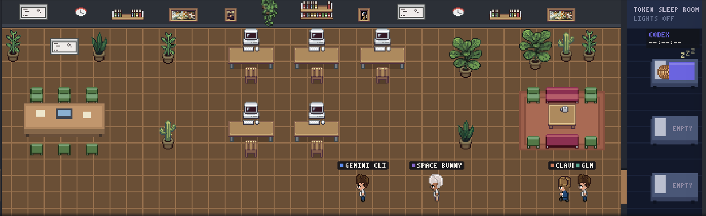

Pick a folder
An empty or existing project. If it isn’t a git repository yet, Konsey prepares it.
Free & open source · macOS & Windows
Write one request. Konsey plans it, splits it into tasks and gives each one to the cheapest agent that can do it. Every agent works in its own copy; the result is merged, tested, reviewed — then applied to your folder.

How it works
An empty or existing project. If it isn’t a git repository yet, Konsey prepares it.
Konsey finds the CLIs on your computer. Missing ones install with one click; sign-in opens for you.
Agents claim the tasks they’re best at. Each works in its own git worktree, so nobody overwrites anybody.
The parts are merged, your tests run and another agent reviews. Only then does it land in your folder.
Features
Every agent gets its own copy of your project. Konsey merges the results and runs your checks before anything reaches your folder.
Simple work goes to cheap models; premium subscriptions are saved for the hard parts.
“Use at most 40% of my Claude limit.” The rest stays yours.
Watch who is planning at the table, who’s coding at a desk and whose quota is sleeping it off.

Ask one agent, or all of them at the table. They build on — and argue with — each other.
Connect GitHub, Supabase, Sentry, Stripe, PostHog or Notion once; agents use them while they work.
No Konsey servers. Your code only goes to the AI services you connect; keys live in your OS keychain.
Agents
Konsey drives the official CLIs with your own subscriptions. Installed ones are picked up automatically; the rest install with one click.
Install
curl -fsSL https://raw.githubusercontent.com/ardakie/konsey/main/site/install.sh | bash
Needs git. Many agent CLIs also need Node.js 20+ — Konsey offers to install both.
FAQ
Yes. Konsey is free and open source (MIT). You use your own subscriptions and API keys; Konsey never resells tokens.
No. Konsey has no servers and no telemetry. Your code goes only to the AI services you connect.
They work in isolated copies. Changes reach your folder only after checks and a review pass — and you can turn automatic applying off.
On macOS: access to the project folder you pick, and permission to open Terminal for installing and signing in to agents. Konsey shows each one in its setup list with a single button.
macOS 11+ (Apple Silicon and Intel) and Windows 10/11 (64-bit). Antigravity is macOS-only.
Yes. Konsey follows your system language: Turkish on a Turkish system, English everywhere else. You can switch in Settings.